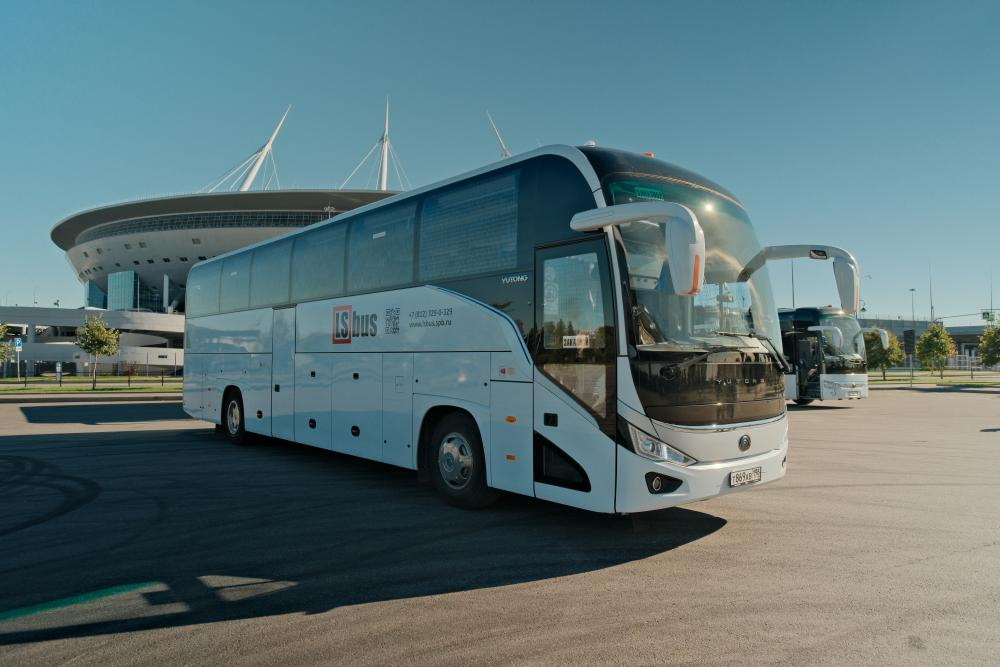

Структуранового сайта
Страниц-разделов5
Услуг6
Моделей в автопарке11
Старые адресасохраняем
Те же разделы и адреса, что сейчас, но собранные вокруг выбора: какая поездка → сколько людей → какая машина → заявка.
00
Главная
- Подбор и расчёт по числу пассажиров
- Автопарк лентой
- Услуги
- Доверие: лицензия, страховка, клиенты
01
Услуги
- Туристическим группам
/turisticheskie-avtobusy - Служебная развозка
/uslugi/sluzhebnaya-razvozka - Трансферы
/uslugi/transfernye-perevozki - Перевозка детей
/uslugi/perevozki-detey - Свадьбы
/uslugi/avtobusy-na-svadbu - Междугородние
/uslugi/mezhdugorodnie-…
02
Автопарк
- Автобусы до 53 мест
- Микроавтобусы 19–20 мест
- Минивэны и седаны
- Карточка машины: галерея, оснащение, расчёт, бронь
/avtopark/…
03
Цены
- Почасовая аренда
- Детские экскурсии и бассейн
- Торжества
- Междугородние, ₽/км
/tarify, /prays-list
04
О компании
- Лицензии и страхование
- Вакансии
/o-kompanii/nashi-vakansii - Сотрудничество
/o-kompanii/sotrudnichestvo - Блог
/blog
05
Контакты
- Телефоны, WhatsApp, адрес
- Заявка с любой страницы
- Панель на телефоне: звонок · WhatsApp · заявка
- Петербург / Москва
От вопросак заявке
Задачасвадьба, экскурсия, развозка
Сколько людейподбор вместимости
Машинафото, оснащение, цена
Расчётчасы × тариф, сразу на экране
Заявкаоператору — туда же, где сейчас ведутся заказы
Обновлениебез потерь
01Адреса и тексты
Переносим действующие адреса, заголовки и тексты, чтобы сайт не терял позиции в поиске. Где адрес меняется — ставим перенаправление.
02Учёт заказов
Сначала разбираемся, как сейчас работают заявки, статусы, операторы и водители. Новая публичная часть подключается к этому процессу, а не ломает его.
03Фото и материалы
Работаем на ваших фотографиях автопарка, лицензиях и описаниях. Новая съёмка не обязательна.
Главная страница
